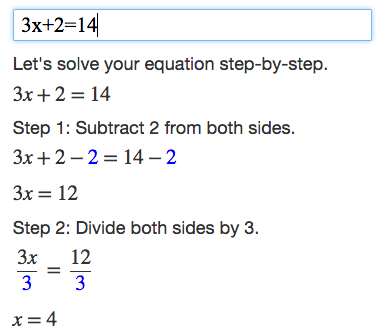
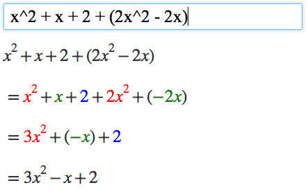

Welcome
You're on the GEOMETRIX home page.
Start learning geometry today with our interactive lessons and community support.
A Puzzle: SUPER EASY
What is the missing number?
? - 2 = 4
OK, the answer is 6, right? Because 6 - 2 = 4. Easy stuff.


Well, in Algebra we don't use blank boxes, we use a letter (usually an x or y, but any letter is fine). So we write:
x - 2 = 4
It is really that simple. The letter (in this case an x) just means "we don't know this yet", and is often called the unknown or the variable.
And when we solve it we write:
x = 6
Easy right?
Watch this video: